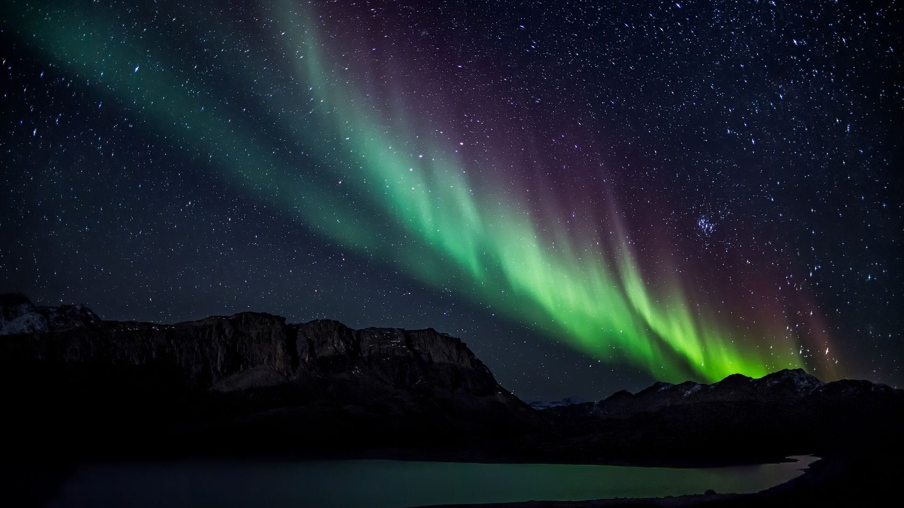
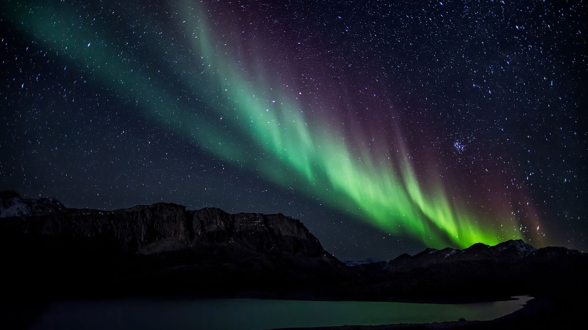
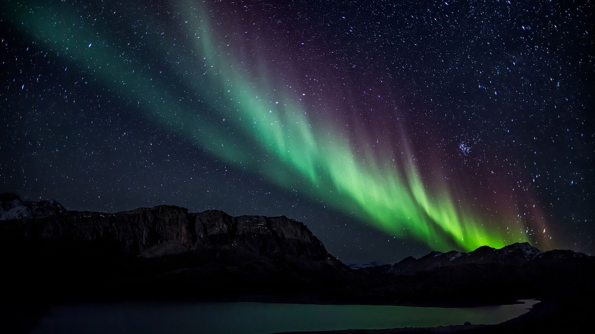
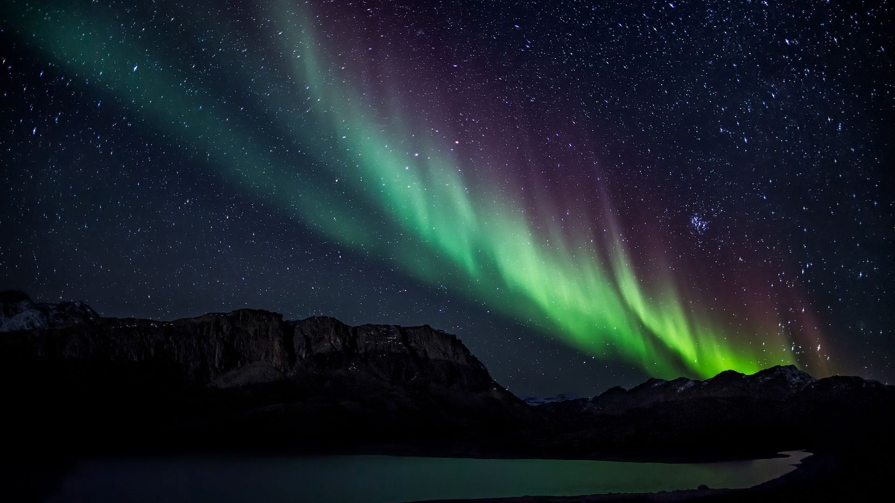

The energy for making the northern lights comes from the Sun. The Sun creates something called the “solar wind”. This is different to the light that we get from the Sun, which keeps us warm and helps us to see during the day. This solar wind drifts away from the Sun through space, carrying tiny particles called protons and electrons. Protons and electrons are some of the tiny building blocks that make up most of the stuff in the universe, like plants and chocolate and me and you.
When the solar wind gets past the magnetic field and travels towards the Earth, it runs into the atmosphere. The atmosphere is like a big blanket of gas surrounding our planet, which contains lots of different particles that make up the air that we breathe and help to protect us from harmful radiation from the Sun. As the protons and electrons from the solar wind hit the particles in the Earth’s atmosphere, they release energy – and this is what causes the northern lights.

By many, this is considered as the Aurora Capital of North America because it is also in the middle of the Auroral Oval. It does, however, have a shorter time period where it can be seen: January through March.
If you are from the United States, this location is much more convenient to visit because you don't need a passport! It is located directly under the Auroral Oval and can be seen anytime from August 21 to April 21.
This location has several attractions in addition to the Northern Lights, such as geothermal pools, volcano tours and quality culture, thus truly making it an ideal tourist spot for many. The best months to see the Northern Lights are between September to April.
You can catch the lights between October and March here, when there is more darkness than light every day. This gives ample opportunity to try and see the northern lights, increasing your chances of seeing them. Lapland has a variety of locations to go to, which you can find here.
This city is based in the heart of the aurora zone in the Norwegian Arctic and is often referred to as one of the best places to see the Northern Lights in the world. Every year, this is a popular destination from September all the way until late March.
The earliest database shows a 30,000 year-old cave painting that some believe to represent the aurora.
Many people claim to hear whooshing and crackling noises when there is an aurora in the sky.There are theories about the auroral noises, but whether or not they actually exist is still a mystery.
During fall and winter in Antarcia, which is the northern hemisphere summer, the southern magnetic pole arora can be fairly active offering the best viewings from places other than Antarctica, with Hobart, Tasmania and the southern tip of New Zealand
Team Lead/Manager
ble@sea.yearup.com
(206)596-5062
Developer, Designer
kwarsame@sea.yearup.org
(206)698-2385
Researcher, Outliner
bduong@sea.yearup.org
(206)504-0656
Editor, Reviewer
rpurganan@sea.yearup.org
(206)480-7876